Past Events
International Conference “Crimea Matters”
April 27–28, 2018 | Hosted by the Harriman Institute at Columbia University | Convened by Valentina Izmirlieva
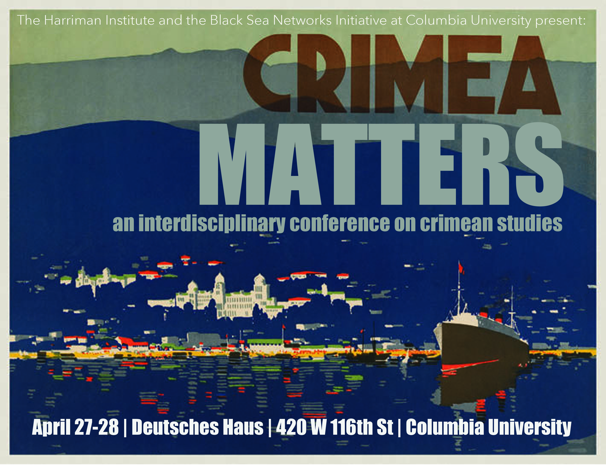
CONFERENCE PROGRAM
FRIDAY, APRIL 27 | DEUTSCHES HAUS
9:15 - 9:30 AM | OPENING REMARKS
Valentina Izmirlieva (Columbia University)
Rory Finnin (Cambridge University)9:30 - 10:45 AM | KEYNOTE ADDRESS
Charles King (Georgetown University)
“Races, Spaces, Places”10:45 AM - 12:15 PM | MEDIA AND IDEOLOGY
Vsevolod Samokhvalov (University of Liege), “Why is Crimea So Special?: The Role of the Black Sea Region in Russia’s Identity”
Sophie Pinkham (Columbia University), “Putin’s Crimean Rhetoric and Imperial Nostalgia”
Moderator: Valentina Izmirlieva (Columbia University)2:15 - 4:30 PM | ECOLOGY AND WAR
Carlos Cordova (Oklahoma State University), “The Transformation of the Crimean Plains: From Prehistory to 2014 and Beyond”
Mara Kozelsky (University of South Alabama), “Crimea in War and Transformation”
Johanna Conterio (Flinders University), “The Landscape Shock: Climate and Health on the Southern Coast of Crimea, 1928-1941”
Moderator: Rory Finnin (Cambridge University)6:00 - 7:30 PM | INAUGURAL SHEVELOV MEMORIAL LECTURE
Valentina Izmirlieva (Columbia University), “The Cult of St. Volodimer and the Theft of History”
7:30 – 8:30 PM | RECEPTION
SATURDAY, APRIL 28 | DEUTSCHES HAUS
9:30 AM - 11:45 AM | TOWARD A HISTORY OF THE CRIMEA
Owen Doonan (California State University Northridge) & Jane Rempel (University of Sheffield), “The Emergence and Development of the North Anatolian—Crimean Communication Corridor in Antiquity”
Victor Ostapchuk (University of Toronto), “Between Pride and Prejudice: Warfare and Violence in Crimean Tatar History”
Oleksandr Halenko (National Academy of Science, Kyiv, Ukraine), “Why Crimea Matters for Ukraine”
Moderator: Mark Andryczyk (Harriman Institute)1:15 – 3:15 PM | WORKSHOP “TEACHING CRIMEA”
3:30 AM - 5:45 AM | THE CASE OF THE CRIMEA TATARS
Idil Izmirli (George Mason University), “Islam, Islamic Institutions and Politics of Persecution in Pre- and Post-Occupation Crimea”
Maria Sonevytsky (Bard College/University of California Berkeley), “The Past as Prolific Symbolic Resource: Crimean Tatar Folk Ensembles and the Plasticity of Tradition”
Austin Charron (University of Kansas), “'Ukrainians of Crimean Tatar Origin': Internally Displaced Crimean Tatars and Ukrainian Civic Nationalism”
Moderator: Sophie Pinkham (Columbia University)5:45 – 7:00 PM | WINE AND CHEESE RECEPTION
7:00 - 9:15 PM | FILM SCREENING AND DISCUSSION
Khaitarma (2013, dir. Akhtem Seitablaev)
Moderator: Yuri Shevchuk (Columbia University)ORGANIZING COMMITTEE
Valentina Izmirlieva
Sophie Pinkham
Mark AndryczykSymposium “The Culture of Post-Socialism: Black Sea Horizons”
April 13, 2018 | Columbia University | Convened by Valentina Izmirlieva (Columbia) with Marijeta Bozovic (Yale), Bradley Gorski (Barnard) and Mitja Velikonja (University of Ljubljana/NYU)
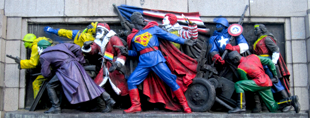
MORNING SESSION: 328 MILBANK HALL, BARNARD CAMPUS
9:30 - 9:45 AM | OPENING REMARKS
Valentina Izmirlieva (Columbia)
9:45 - 11:00 AM | IMAGES OF EXCLUSION: ETHNO-NATIONALIST GRAFFITI IN THE BALKANS
Keynote address by Mitja Velikonja (University of Ljubljana/NYU)
11:15 AM - 12:45 PM | ROUND TABLE: BLACK SEA FILM AFTER SOCIALISM
Marijeta Bozovic (Yale)
Marta Figlerowicz (Yale)
Masha Shpolberg (Yale)Moderator: Aleksanadar Boskovic (Columbia)
AFTERNOON SESSION: 1219 INT'L AFFAIRS BUILDING, HARRIMAN INSTITUTE
2:30 - 4:30 PM | PANEL: LITERARY INSTITUTIONS IN POST-SOCIALIST UKRAINE
Dirk Uffelmann (U of Passau)
Mayhill Fowler (Stetson)
Bradley Gorski (Barnard)5:00 - 6:30 PM | EVENING READING AND CONVERSATION
Bulgarian writer Georgi Gospodinov (Cullman Center, NYPL)
in conversation with Valentina Izmirlieva (Columbia)6:30 - 7:00 PM | WINE AND CHEESE RECEPTION
Black Sea Myths and Modern Europe
October 6, 2017 | 3:00pm - 6:00pm Heyman Center Common Room, Columbia University
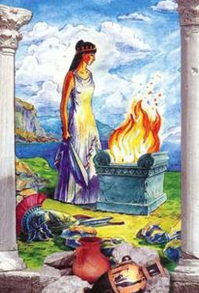-
SPEAKERS:
- Edith Hall (Professor of Classics, King's College London): “Tauric Iphigenia and Crimean Identity: Pericles to Putin”
- Cleo Protohristova (Professor of Comparative Literature, Plovdiv University), “The Myths of Prometheus and the Black Sea Region”
- Tamta Khalvashi (Assistant Professor of Anthropology, Free University of Tbilisi), “The Horizons of Medea and New Cosmologies of Dispossession in Georgia”
The “Black Sea Myths and Modern Europe” symposium addresses key ancient Black Sea myths that retain a stable presence in the Western cultural imagination—Prometheus, Medea and the Argonauts, Iphigenia, Odysseus—and aims to explore their life in the lands where these myths initially emerged. It targets especially the little-studied political mobilization of these myths in the construction of modern national, regional, and pan-European identities for various communities around the Black Sea. This symposium is the first public event of a long-term international research program, mobilizing an interdisciplinary team of scholars from the U.S., U.K., Greece, Bulgaria, and the Republic of Georgia under the umbrella of the global initiative Black Sea Networks, housed by the Slavic Department of Columbia University.
Discussant: Helene Foley (Professor of Classics, Barnard College)
Organizer: Valentina Izmirlieva (Professor of Slavic Literature, Columbia University)
Sponsors:
The Black Sea Networks Initiative
Columbia University Department of Classics
President's Global Innovation Fund
The Heyman Center for the Humanities
The Harriman Institute
Across the Black Sea: Russian-Ottoman Encounters in the 18th and 19th Centuries
Convened by Catherine Evtuhov
April 22, 2017 | International Affairs Building 1219 | Columbia University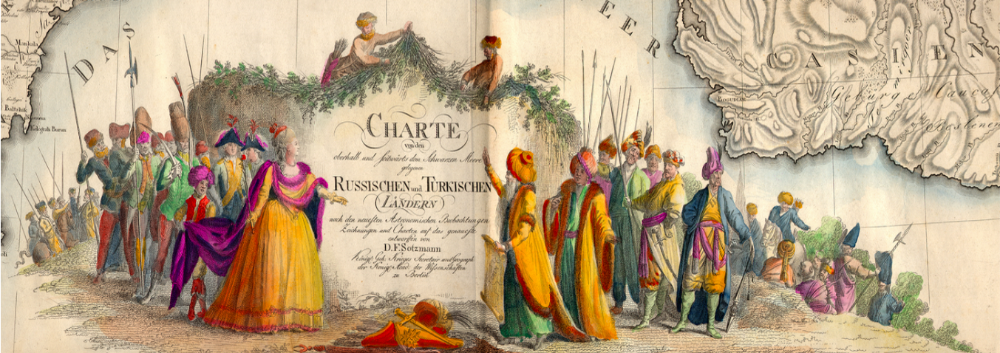Workshop Program
10:00 AM – 11:00 AM | EMPIRES & MILITARY
Gábor Ágoston (Georgetown University), “The Bulwark of Islam: Empire and Border Defense along the Danube and the Black Sea”
Brian Davies (University of Texas at Austin), “The Development of Russian and Ottoman Military Technicalism, 1677-1774”11:00 AM – 12:30 PM | POPULATION POLITICS & MIGRATION
Andrew Robarts (Rhode Island School of Design), “Migrants and Microbes: The Human Ecology of the Black Sea Region in the Late 18th and Early 19th Centuries”
Polina Ivanova (Harvard University), “‘Work in Russia but Eat in Turkey!’: Migrant Labor, Ecology and Seasonal Cross-Border Movement in the Russian-Ottoman Pontus”
Victor Taki (King’s University, Edmonton), “War and Population Politics in the Eastern Balkans: Russian Occupations of Bulgaria in 1828-1830 and 1877-1879”12:30 PM – 1:30 PM | LUNCH
1:30 PM – 2:30 PM | CRIMEA
Dilyara Agisheva (Georgetown University), “Colonial Encounter and Russification of the Islamic Legal System in Crimea in the Late 18th and Early 19th Centuries”
Kelly O’Neill (Harvard University), “Consuming Crimea: Geographies of Trade after Annexation”2:30 PM – 3:00 PM | RELIGIOUS MINORITIES
Mariya Amelicheva (Georgetown University), “Reciprocal Obligations: The Unlikely Roots of Russian Imperial Claims to Protectorship of Ottoman Christians.”
3:00 PM – 3:20 PM | COFFEE
3:20 PM – 4:20 PM | MARITIME DIPLOMATIC & LEGAL CULTURES
Kahraman Şakul (İstanbul Şehir University), “Capitulations, Diplomacy, & the Black Sea, 1740-1800s”
Julia Leikin (University College, London), “United by Sail, Divided by Law: The Black Sea in the First Half of the 19th Century”4:20 PM – 5:20 PM | DIGITAL, TEACHING, & ARCHEOLOGY
Louise McReynolds (University of North Carolina at Chapel Hill), “Storymapping the Civilizations Along the Black Sea Littoral”
Kelly O’Neill (Harvard University), “Beautiful Spaces: The Pleasures and Pains of Building a Digital History of Crimea”5:20 PM – 5:30 PM | BREAK
5:30 PM – 6:00 PM | 20TH CENTURY
Onur İşçi (Bilkent University, Ankara), “Soviet-Turkish Friendship and the Post-Imperial International Order”
The workshop is sponsored by the Harriman Institute with support from the Columbia University Department of History and the Black Sea Networks Initiative.
Crimea: Center of Gravity in the Black Sea
Symposium at Cambridge UniversityConvened by Rory Finnin
April 21, 2017 | Pitt Building | Cambridge University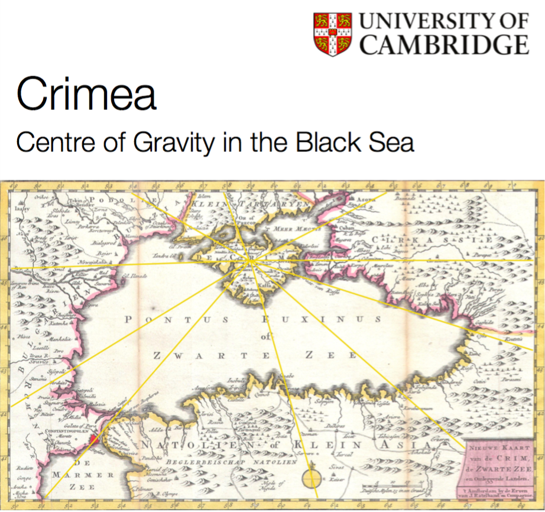Program
9:30 AM - 10:00 AM: Coffee and refreshments
10:00 AM - 10:15 AM | Opening remarks
Rory Finnin (University of Cambridge) Valentina Izmirlieva (Columbia University)10:15 AM - 12:30 AM | PANEL 1: Centripetal Forces
Idil Izmirli (George Washington University), ‘Variations on a Theme: Politics and Islam in Crimea before and after the Annexation’
Hakan Kırımlı (Bilkent University), ‘The Crimean Tatars in Russian-Occupied Crimea’
Eleanor Knott (LSE), ‘Discourses of Antagonism in Crimea before Annexation: “Discriminated” Russians and Crimean Tatars’
Sait Ocaklı (Harvard), ‘Turkish Perspectives on the Crimean Crisis’Chair: Maria Terentieva (Cambridge)
12:30 PM – 1:30 PM: Lunch
1:30 PM – 3:45 PM | PANEL 2: Centrifugal Forces
Sophie Pinkham (Columbia), ‘Putin's Crimea Rhetoric and Imperial Nostalgia’
Vsevolod Samokhvalov (Liege), ‘Why Crimea Is So Special: The Holy Grail of Russia's Great Power Identity’
Olga Zeveleva (Cambridge), ‘Media and Power in Crimea 2017: Notes from the Field’Chair: Jon Roozenbeek (Cambridge)
3:45 PM – 4:15 PM | Tea break
4:15 PM – 5:30 PM | Panelist roundtable
Moderators: Rory Finnin (Cambridge) and Valentina Izmirlieva (Columbia)
5:30 PM – 6:30 PM | Wine reception
Hosted by Cambridge Ukrainian Studies, University of Cambridge
In partnership with the Black Sea Networks initiative, Columbia UniversityCONFERENCE PROCEEDINGS
On April 21st, the Cambridge Ukrainian Studies program held the workshop “Crimea: Centre of Gravity in the Black Sea” at the University of Cambridge, in partnership with the Black Sea Networks Initiative.
Rory Finnin, head of the Department of Slavonic Studies at University of Cambridge, explained that a central goal of the workshop was to combat “Crimnesia,” the tendency to ignore Crimea or relegate it to a marginal role in the history of many different countries and regions. As a peninsula connected to mainland Ukraine by a thin thread of land, Crimea can easily be misperceived as an island, beautiful but remote, far from the center of history or politics. But Crimea is central, Professor Finnin argued, to the project of Ukrainian history. Valentina Izmirlieva, Principle Investigator of Columbia University’s Black Sea Networks Initiative, noted that many different cultures, ethnicities, and religions have settled down in Crimea and then been pushed away. Like the Black Sea, Crimea is a site of fluidity and transience, a lack of fixed boundaries, and mingling of disparate elements.
The workshop’s first panel, “Centripetal Forces,” opened with a presentation by Idil Izmirli (George Mason University), “Variations on a Theme: Politics and Islam in Crimea before and after the Annexation.” Professor Izmirli explained that although Islam emphasizes cohesion and camaraderie, there are a number of different narratives and tendencies among Ukrainian/Crimea Muslim organizations. Ukraine’s Muslim groups offer social, cultural, language, and education programs as well as religious ones; some of the organizations are positioned within a transnational Muslim community. The annexation of Crimea by Russia in 2014 dramatically changed the structure of the peninsula’s Muslim organizations, which were forced to re-register. Many Crimean Tatars left the peninsula because of the hostile political climate; home searches of Crimea Tatars continue to occur on a regular basis, along with detention without cause, forced stays in psychiatric hospitals, and other gross rights violations. Remaining Muslim leaders have refrained from criticizing the authorities. Despite the Russian Constitution’s assertion that there is no state religion, Orthodox Christianity is promoted in Crimea at the state level. Russian support for the construction or refurbishment of new mosques has obviously been a PR effort rather than a meaningful act of support. The annexation has had a profoundly negative effect on Crimea’s Muslim community.
Hakan Kirimli (Bilkent University) spoke about “The Crimean Tatars in Russian-Occupied Crimea.” The Crimean Tatars arrived in Crimea in the sixth century AD, developing a rich culture linked to that of the Krymchaks. When Russia annexed the peninsula in the 18th century, Crimean Tatars constituted most of Crimea’s population. The 1917 revolution saw a short-lived Crimean Tatar democracy. In 1944, Crimean Tatars were deported from Crimea en masse. After the break-up of the Soviet Union, Crimean Tatars wholeheartedly supported Ukrainian independence and the inclusion of Crimea into Ukraine; during the 2014 Russian invasion, Crimean Tatars resisted energetically. Despite the failure of the post-Soviet Ukraine state to offer strong support to the Crimean Tatars, in Ukraine Crimean Tatars were free to express themselves, to create their own cultural and religious organizations, and to return to their homeland. Now they are experiencing severe repression under Russian rule, Kirimli said, and the liberation of Crimea is a question of life or death for Crimean Tatar culture.
Eleanor Knott (London School of Economics) presented on “Discourses of Antagonism in Crimea before Annexation: ‘Discriminated’ Russians and Crimean Tatars.” Beginning with the question of why Crimean Tatars have been the objects of persecution and repression since annexation, she pointed to the fractured meaning of “being Russian,” and the highly politicized, instrumental nature of the identity of Russians who perceive themselves as the victims of discrimination. This shift in power relations, in which members of a majority present themselves as victims while portraying an oppressed minority as the threat, represents a “discursive inversion” that is also relevant to Moldova and Romania, as well as to political movements in Western Europe and the US that portray white people or men, for example, as oppressed groups. In the case of Crimea, a constituency of “discriminated” Russians is usually involved in pro-Russian political organizations. Identifying strongly as Russian but feeling threatened by the Ukrainian state, they consider themselves victims of Ukrainization and attacks on Russian identity, and continue to nurture Soviet-era grievances, arguing, for example, that Stalin’s deportation of Crimean Tatars was appropriate. These “discriminated” Russians view the Crimean Tatars’ identification as indigenous people as an effort to exclude Russians. They promote the idea of Crimean Tatars as extremists, helping to escalate repression. This self-marginalization has proven an effective strategy, enabling people who considered themselves post-Soviet losers to become post-annexation winners. Knott contrasted the “discriminated Russians” with “ethnic Russians” who identify as Russian but don’t feel discriminated against; “political Ukrainians” who identify as citizens of Ukraine, regardless of their ethnic identity; “Crimeans” who identify primarily regionally and inter-ethnically, considering themselves in between Ukrainian and Russian; and “ethnic Ukrainians” who identify ethnically and linguistically as Ukrainian. Knott’s study results are analyzed in detail in her recent papers in Citizenship Studies, East European Politics and Societies, and Social Science Quarterly.
Sait Ocakli (Harvard University) discussed “Turkish Perspectives on the Crimean Crisis.” Turkey refrained from expressing a strong reaction to Russia’s annexation of Crimea. Mustafa Dzhemilev, former Chairman of the Crimean Tatar Mejlis, asked President Erdogan to send Turkish warships to blockade Crimea, to close Turkish straits to Russian warships, and to join in sanctions against Russia. Erdogan said Turkey would not do this unless it was part of a larger NATO action; that Turkey would not join in sanctions because it was not an EU member; and that Turkey could help the Crimean Tatars more through continued dialogue with Russia. Turkey stopped flights to Crimea, but took no other steps. The Turkish public has been mostly indifferent to the Crimean crisis, taking the position that Turkey has no reason to become involved in a conflict between Russia and Ukraine. The Turkish pro-government media pushed a highly negative image of Maidan as a coup financed by George Soros and US and Euro imperialism. There were also some areas in which Turkey stood to benefit from the conflict. Turkish suppliers hoped to meet Russian food needs caused by European sanctions, while Putin’s suggestion of sending gas to Europe through Turkey rather than through Ukraine offered potential economic and political gains for Turkey. Turkey’s large Crimean Tatar community organized protests, but Crimean Tatars faced criticism within Turkey for their support of “Ukrainian fascists.” Turkey later agreed to stop the movement of warships from Turkey to Crimea, but this was probably an attempt to force Russia to remove sanctions on Turkey after Turkey shot down the Russian plane, not an attempt to join in EU/US punishment of Russia for annexation of Crimea.
The workshop’s second panel, “Centrifugal Forces,” turned its attention from Islam, the Crimea Tatars, and Turkey to the significance of Crimea within Russian culture and politics. Sophie Pinkham (Columbia University) presented on “Putin’s Crimea Rhetoric and Imperial Nostalgia.” There are marked similarities between Putin’s rhetoric and that used in relation to Catherine the Great’s annexation of Crimea. Putin stresses Crimea’s status as a place of harmonious coexistence of many different ethnic and religious groups, a flattering “mirror of multi-ethnic Russia.” The annexation allowed Russia to assert its role as a benevolent defender of the rights of ethnic and religious minorities against the “Ukrainian fascists.” Crimea’s location makes it an important site of connection between Russia and its Slavic and Orthodox Christian friends in the Black Sea basin, thus helping to counterbalance American and NATO hegemony; the peninsula is also a place to discover and commemorate Russia’s history, identity, and prime position in Western and Orthodox culture. Along similar lines, Catherine’s annexation was framed as the establishment of Russia’s equality, or even superiority, to rival Western powers. Russia was savior of the oppressed, bringer of peace and tolerance. The similarities between Crimea rhetoric under Putin and Catherine offer a reminder that this particular conquest has cultural and historical roots that reach far beyond the Soviet period. Pinkham’s talk expanded on parts of her book Black Square: Adventures in Post-Soviet Ukraine (Norton/Heinemann, 2016).
Vsevolod Samokhvalov (University of Liege) addressed the question of “Why Crimea Is So Special: The Holy Grail of Russia’s Great Power Identity.” Drawing on his new book, Russian-European Relations in the Balkans and Black Sea Region (Palgrave, 2017), Samokhvalov opened with the principle that formative beliefs are formed in adolescence and early adulthood, including the sense of membership in an “imagined community.” He discussed some of the findings of his analysis of Soviet textbooks, which identify the Black Sea shores, and especially Crimea, as the site of the origin of Western civilization. Prince Vladimir’s baptism made Crimea the link between Russia and Europe and the basis of pan-European civilization. Crimea’s high concentration of “hero cities,” sites of major military battles, gives Crimea a special status in Russian military history and culture, the site on which many of Russia’s claims to great power status have been fought over the centuries. Meanwhile, the Black Sea functions, in the Soviet cultural imagination, as a locus of adventurous freedom and exotic adventures. It is striking, though, that the “Crimean Spring” of 2014 receives only one short paragraph in the new Russian history textbook; Crimea is already fading from view in contemporary Russia’s political narrative.
Olga Zeveleva (University of Cambridge) presented preliminary results of her 2017 fieldwork in Crimea in “Media and Power in Crimea 2017: Notes from the Field.” Since annexation, Crimean media production has come to be dominated by Russian state-supported media, with Ukrainian outlets gone. A Russian state-funded Crimean Tatar TV station, Millet, was created to compete with the longstanding Crimean Tatar station ATR, which has left Crimea but is still watched via satellite, in part due to an ATR campaign to install satellites in Crimean Tatar homes. It is very hard for any journalists not approved by Russia to operate—they cannot get press passes, are subject to apartment searches, and face other obstacles. Sevastopol and Simferopol are homes to different media fields, with Sevastopol operating as a discrete zone and Simferopol functioning as the center of the Crimean media; the two fields often come into conflict. Crimean radio and television stations cannot show new content from abroad since media companies are unwilling to send new content to Crimea in fear of sanctions; this means a much greater reliance on older material.
In a concluding roundtable, participants discussed some of the methodological questions raised by the study of Crimea, many of which also apply to Black Sea studies. How do we choose our historical timeframe and geographical boundaries? How do we work on a site in which traditional dichotomies of empire and nation-state do not apply? The peninsula offers a rich set of competing historical narratives; a metahistorical approach can help us to parse these narratives, isolate invented or politically manipulated elements, and interrogate our own preconceptions based on our areas of scholarly focus. As Franco Moretti observed, metaphors abound in unknown places. Crimea offers rich possibilities for the study of place and space within cultural and historical narratives.
Participants agreed on the value of convening scholars from different disciplines and regions to discuss Crimea, and the importance of continuing and extending the discussion that began at the workshop. A future workshop or conference could begin with a call for papers, op-eds, etc., and could be tied to a Crimea-focused special issue of a journal. Other ideas for future activities included the creation of a scholarly database of videos and other media related to the Crimean annexation/occupation, a large and valuable body of material that may disappear from YouTube and other websites without warning; the Columbia Academic Commons might be well suited for this. Ukrainian historians sometimes trace private family histories for pay; this information could also be archived in one place.
The Legacy of Ovid in the Black Sea Region
with Professor Adina Ciugureanu, Ovidius University, Constanta, Romania,
and Fulbright Visiting Scholar, University of California, Santa BarbaraApril 12, 2017 | 6:00 PM - 8:00 PM | 1219 International Affairs Building | Columbia University
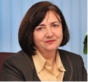Publius Ovidius Naso, whose passing 2000 years ago is commemorated this year, has had a tremendous influence on literature, philosophy, and the arts throughout the two millennia since his death on the Black Sea shore. The conference will open with a short presentation of Ovid’s life, writings and allegations that caused his exile to the “bleak” Greek city, Tomis, in yr 9 A.D., and will continue with the poet’s legacy in Europe in general and in the Balkan area in particular. The talk will focus on exile and its effects, as a major theme that have inspired writers throughout centuries as well as on the reception of Ovid in the Balkan countries’ cultures through partial translations of his writings.
Dr. Adina Ciugureanu is Professor of British and American culture at Ovidius University, Constanta, Romania and the Chair of the Institute of Doctoral Studies. Her research interest covers the Victorian and modernist ages in both Britain and the USA, with special focus on consumerism and, more recently, on geocriticism and urban studies. She has published five books and over 40 articles and volume chapters in reputed national and international academic journals and conference volumes. Following her first Fulbright grant (2001-2002) she authored a volume and individual articles on American popular culture. She has also edited and co-edited 8 conference volumes. Currently, she benefits from the second Fulbright grant at UCSB, doing research on cityscape, especially LA, and its representations in American fiction. Apart from Columbia, she will lecture at the Global Awareness Center at the Arkansas State University-Beebe.
Respondent: Professor Gareth Williams, Columbia University Department of Classics
Light refreshments will be served
This event is supported by the Outreach Lecturing Fund of the Fulbright-Hays Foundation, the N. Iorga Chair for Romanian Language and Culture at Columbia University, the Harriman Institute, and the Black Sea Networks Initiative.
Black Sea Film Symposium
Convened by Marijeta Bozovic and Marta Figlerowicz with Mihaela Mihailova, Ingrid Nordgaard, and Masha Shpolberg
Friday, March 31 and Saturday, April 1 | Luce Hall Auditorium | Yale University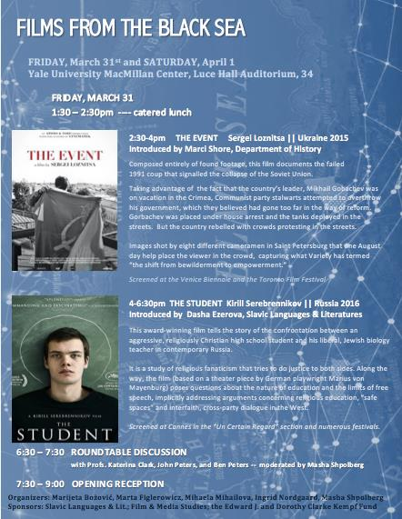FRIDAY, MARCH 31:
- 2:30 pm: The Event (dir. Sergey Loznitsa, 2016)
- 4:00 pm: The Student (dir. Kirill Serebrennikov, 2016)
- 6:30 pm: Round table discussion
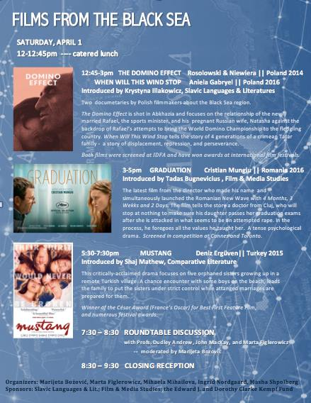SATURDAY, APRIL 1:
- 12:45 pm: Domino Effect (dir. Elwira Niewiera and Piotr Rosołowski, 2014) and When Will This Wind Stop (dir. Aniela Gabryel, 2015)
- 5:30 pm: Graduation (dir. Cristian Mungiu, 2016)
- 5:30 pm: Mustang (dir. Deniz Gamze Ergüven, 2015)
- 7:30 pm: Round table discussion
BLACK SEA HISTORY, 19TH CENTURY: RESEARCH AND WRITING
A Black Sea Networks SeminarConvened by Valentina Izmirlieva
with Gelina Harlaftis, Professor of Maritime History, Ionian University, Greece
Friday, March 24, 2017 | 4:00pm-6:00pm | Columbia University | 707 International Affairs Building
How does one write the history of a Sea? The Black Sea regions share political economy, trade, shipping, finance, industry, and cultures, linked together by land and sea routes. During the nineteenth century, the area became the world's largest grain and oil producer. From the last third of the 18th century to the beginning of the 20th century, more than 24 port cities sprang up on the coastline. These port cities became centers of attraction for economic immigration from the whole region of central and south-eastern Europe, while more established mobile, entrepreneurial groups like Greeks, Jews, and Armenians took charge of external trade and shipping.
Maritime history is unusual in placing the sea, its ports and its entrepreneurs at the centre of analysis, looking beyond national borders. Based on two research projects that ran from 2007 to 2015 from Ionian University in Corfu, I will present the maritime history methodology that we used to research and write the Black Sea history. Some of the results will be presented, drawing on Eastern and Western European archives and academic networks with 20 universities and research centers from Greece, Bulgaria, Romania, Moldova, Ukraine, Russia, Georgia and Turkey.
Gelina Harlaftis is Professor of Maritime History in the Department of History of Ionian University. She graduated from the University of Athens and completed her graduate studies at the Universities of Cambridge (M.Phil.) and Oxford (D.Phil.). She was President of the International Maritime Economic History Association (2004–2008) and visiting Fellow in universities of Canada, the United States and the United Kingdom. She has led numerous research projects, the most recent being “The Black Sea and its port cities, 1774-1914. Development, convergence and linkages with the global economy” within the operational programme “Thalis,” co-financed by the European Union and the Greek Ministry of Education from 2012–2015 (www.blacksea.gr). Her most recent books are Merchant ‘Colonies’ in the Early Modern Period (15th–18th Centuries) with Viktor Zakharov and Olga Katsiardi-Hering (Chatto & Pickering 2012), World’s Key Industry with Jesus Valdaliso and Stig Tenold (Palgrave/Macmillan 2012), Greek Shipping History, 1700–1821 with Katerina Papakonstantinou (Kedros, Athens, 2013, in Greek) and Greeks in the Azov, from the 18th to the beginning of the 20th century. New approaches in the history of the Greeks in South Russia with Evrydiki Sifneos (National Research Foundation, Athens 2015).
Event co-sponsored by the Harriman Institute
AUSTERITY MEASURES: THE NEW GREEK POETRY
A celebration co-sponsored by the Black Sea Networks InitiativeMarch 21, 2017 | 7:00pm-8:30pm | McNally Jackson, 52 Prince St, New York, NY 10012, USA

Join NYRB Poets for a celebration of the first US publication of Austerity Measures: The New Greek Poetry, edited by Karen Van Dyck (The Scattered Papers of Penelope). Austerity Measures collects the best, most provocative poetry written in the wake of the 2008 debt crisis that shook Greece and the rest of the world. More recently, Greece has become one of the main channels into Europe for refugees from poverty and war, an attendant reality that influences much of the poetry in this collection as well. At this event, Van Dyck will be joined by Maria Margaronis of The Nation, Kurdish-Greek writer Hiva Panahi (Secrets of the Snow), Greek-Albanian writer Gazmend Kapllani (A Short Border Handbook), and the poet Yusef Komunyakaa (The Emperor of Water Clocks) for an evening of discussion and readings that will touch on the intersection between poetry, translation, journalism, and the refugee experience.
A portion of book sale proceeds from the evening will be donated to the ACLU and books by the participants, as well as Austerity Measures, will be available.
THE BLACK SEA: NETWORKS AND HORIZONS
A Panel discussionwith Tamta Khalvashi (Fulbright Scholar, Department of Anthropology, NYU) and Valentina Izmirlieva (Professor, Department of Slavic Languages, Columbia University)
February 27, 12:00-2:00pm, Center for European and Mediterranean Studies, 285 Mercer Str., 7th Floor, New York University
A light lunch will be served.
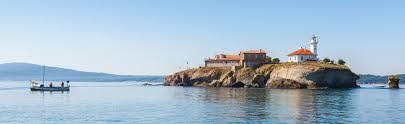TRAUMA AND MEMORY:
TEARS IN THE FABRIC OF ARMENIAN AND GREEK COMMUNITIES
Poetry Reading and Film ScreeningDiscussion with the poet and filmmaker, convened by Valentina Izmirlieva
Discussants: Bella Grigoryan (Yale University) and Isin Onol (University of Applied Arts, Vienna, Austria)
Reception to follow
Friday, February 17, 3:00-6:00 pm | 612 Schermerhorn Hall, Columbia University
GRANDMA’S TATTOOS is a personal film about what happened to many Armenian women during the genocide of 1915. Author and filmmaker Suzanne Khardalian makes a personal journey into her own family to investigate the truth behind Khanoum, her late grandmother. The film is like a ghost story; a mystery, a taboo. No one wants to tell the whole story. In order to bring the pieces of the puzzle together we move between different scenes, from today’s welfare Sweden all the way to Suzanne Khardalian’s childhood in Beirut. Produced by PeÅ Holmquist.
Suzanne Khardalian is an independent filmmaker and writer. She studied journalism in Beirut and Paris and worked as a journalist in Paris until 1988 when she started to work in film. She holds a Master’s Degree in International Law and Diplomacy from the Fletcher School at Tufts University and contributes articles to various journals. She had directed a dozen films that have been shown both in Europe and in the USA.

THE BLACK SEA is a long poem-cycle about the Black Sea Greeks and their exodus from that region. The Black Sea explores the historic “great catastrophe” of the Pontic Greeks of Asia Minor in the 1920s through a series of “sonnet-monologues” or voices from the past. Priests, prostitutes, soldiers, and a bizarre cast of characters move through this poetic re-imagining of a tragic chapter in Greece’s history.
Stephanos Papadopoulos was born in North Carolina in 1976 and raised in Paris and Athens. He is the author of three books of poems: Lost Days, Hôtel-Dieu, and The Black Sea, as well as the editor and co-translator (with Katerina Anghelaki-Rooke) of Derek Walcott’s Selected Poems into Greek (Kastaniotis Editions, 2006). He was awarded a Civitella Ranieri Fellowship for The Black Sea and in 2014 he was awarded the Jeannette Haien Ballard Writer’s Prize selected by Mark Strand. His poems and translations have appeared in journals such as The New Republic, The Yale Review, Poetry Review, Stand Magazine and he writes regularly for the Los Angeles Review of Books.
Discussants: Bella Grigoryan (Yale University) and Isin Onol (University of Applied Arts, Vienna, Austria)
The event is co-sponsored by the Program in Hellenic Studies, Columbia University.
LITERATURES ACROSS BORDERS: ARMENIANS AND GREEKS
A Black Sea Networks SeminarConvened by Valentina Izmirlieva
with Bella Grigoryan (Yale University) and Karen Van Dyck (Columbia University)
Thursday, February 16, 2017 4:00-6:00 pm | Hamilton 709, Columbia University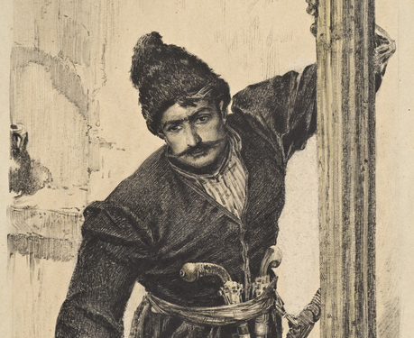Image: Illustration from Abovyan's Wounds of Armenia by Grigor Khanjian-Sepuh (1926)
Romantic Prosaics and Modern Armenian Culture:
How to Read Khachatur Abovyan’s Wounds of Armenia, and Why
Although no sovereign Armenian state existed from the fourteenth century until the twentieth, “Armenia” figured quite prominently in Russian imperial public discourse, giving rise to a rhetorical formation that foregrounded the ordinary and the domestic. The Russo-Persian War of 1826-28 prompted a multi-lingual, multi-generic response that included historical and ethnographic writing, poetry and prose, and reportage. I propose to re-read Khachatur Abovyan’s chronicle of the Russo-Persian war, Wounds of Armenia (finished circa 1841), the first major novel in the Eastern Armenian vernacular, in an artistic, cultural and historical context, with attention to its reception in the Russian Empire, the Soviet Union and beyond. A not-quite-historical-novel produced by a self-styled and self-consciously stateless Eurasian cultural tradition that came to Romanticism rather late, Wounds of Armenia invites its reader to interrogate many of the familiar categories of Romantic nationalism and literary modernity while looking both east- and westward from the Ararat valley of the Armenian revivalist imagination.Bella Grigoryan is Associate Professor of Slavic Languages and Literatures at Yale. Her specific areas of research include the rise of the reading public and the periodical press, theory and history of the novel, the history and politics of social estates in Imperial Russia, and modern Armenian literature and culture from the late eighteenth century to the contemporary moment. Her first book, Noble Subjects: The Russian Novel and the Gentry, 1762-1861, will be published by Northern Illinois University Press in 2017.
Migration, Translingualism, Translation
Increasingly, literature asks how to translate the foreign accents and translingual idioms of the migrant. Two contemporary Greek novellas create transliterative and homophonic spaces that are themselves translational. Thanasis Valtinos’s The Book of Andreas Kordopatis, Part One, America (1964), represents early migration with a story of a Greek making his way from his hometown in the Peloponnese to New Orleans, while Sotiris Dimitriou’s May Your Name be Blessed (1993), addresses the more recent migration of a boy, born in Albania to Greek parents, who returns to Greece when the communist regime ends. Both texts create shared linguistic spaces that resonate for two or more communities, helping readers to rethink concepts of cultural belonging. Existing English translations of these macaronic texts are contrasted with translations that introduce translingual sound patterning and intertextual references. Comparative studies of translingualism in literature and translations can offer new categories for understanding migration and enable fresh interventions into the debates on world literature, while also stimulating the development of inventive translation practices.Karen Van Dyck is Kimon A. Doukas Professor of Modern Greek Literature in the Classics Department at Columbia University. Her books include Kassandra and the Censors: Greek Poetry since 1967, The Rehearsal of Misunderstanding: Three Collections by Contemporary Greek Women Poets, The Scattered Papers of Penelope: New and Selected Poems by Katerina Anghelaki-Rooke, and the bilingual anthology Austerity Measures: The New Greek Poetry. Her current research focuses on the literature of the Greek Diaspora and its lessons for translation.
Azbuka Arbuza: Mapping Fruit Names in the Black Sea Region
A Black Sea Networks Research-a-thonOrganized by Serhii Tereshchenko and Bradley Gorski
Saturday, January 28, 10:00 am-3:00 pm | Butler Library, 208, Columbia University
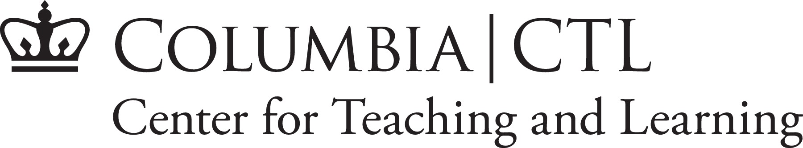Our research-a-thon will compile a database that shows when the words for fruits and vegetables entered the various Black Sea languages. This data set will allow us to map the spread of these linguistic units against known Black Sea trade routes, to see whether, as one might expect, fruit names were borrowed as the fruits themselves were bought and sold. If this hypothesis proves inadequate, the non-coincidence of trade routes and linguistic spread could give rise to speculation about alternative or previously unknown trade routes, about the (intentional) skewing of linguistic data to conform to narratives of nationhood, or other possibilities.
The resulting data set will be made available to other scholars to employ in their own research, expand to adjacent regions, or re-imagine in other ways. Our visualizations will be presented on the Black Sea Networks website and contribute to a publication in the forthcoming issue of Russian Literature on Digital Humanities in Slavic Studies.
We invite anyone interested in taking part in this exciting research project to write Bradley Gorski for details on how to participate.
Technologies of Dissent: Book Piracy as Peer Preservation
A Black Sea Networks SeminarConvened by Valentina Izmirlieva
with Dennis Tenen, Assistant Professor of English, Columbia UniversityFriday, January 20, 4:00-6:00 pm | Columbia University
This talk will introduce the audience to one of the most influential online libraries, built and maintained by a small team of volunteers in Eastern Europe and beyond. Contemporary market-based systems of knowledge distribution, it will argue, lead to major global inequities of access. Grassroots communities organize to address such deficiencies. Their efforts deserve our critical attention and support. I will finally use the initial case study to advance a research program that examines literary production in its social and infrastructural contexts.
Dennis Tenen is Assistant Professor in the Department of English and Comparative Literature, Columbia University. A former software engineer at Microsoft and currently faculty associate at Columbia's Data Science Institute, his first monograph, Plain Text: The Poetics of Computation is forthcoming from Stanford University Press in 2017. His work appears on the pages of Computational Culture, boundary2, and Modernism/modernity on topics that range from book piracy, unintelligent design, and aesthetics of data visualization. He is a co-founder of Columbia's Group for Experimental Methods in the Humanities, a research collective whose work has received numerous awards, major grants, and recognition from the press in The New York Times, Fast Company, Der Spiegel, and Le Monde.
Discussant: Serhii Tereshchenko (Columbia History)
The Realm Between Waters
Film ScreeningThursday, December 1, 5:30-7:30 pm | 1201 International Affairs Building, Columbia University
The Realm Between Waterspremiered in New York on December 1, 2016, courtesy of the Romanian news agency AGERPRES. This documentary depicts the lives of Lipovan Russians who live between the Black Sea and the Danube in the Danube Delta. It is about union, cultural preservation, unique architecture, and natural landscapes.
Thanks to: Alex Giboi, Director General, AGERPRES Romania, Sergiu Olteanu, Director of Photography, AGERPRES, and Alex Micsik, Photojournalist, for bringing this project to the Black Sea Networks initiative.
The Realm Between Waters, Part I (in Romanian):
The Realm Between Waters, Part II (in Romanian):
Women in Black Sea Pilgrim Networks
A Black Sea Networks SeminarConvened by Valentina Izmirlieva
with Valentina Izmirlieva speaking on "Hajji Mama": Christian Pilgrimage and Female Empowerment in the Late Ottoman Empire
and Nikolaos Chrissidis on Conduct Unbecoming: Women Pilgrims from the Russian Empire in the Holy Land in the late 19th and early 20th CenturiesFriday, December 2, 4:00-6:00 pm | 703 Hamilton Hall, Columbia University
The Black Sea Networks Seminar series provides a forum for developing innovative methodological approaches to networks around the Black Sea region. Seminars will include leading scholars, with junior scholars acting as discussants. The events are free and open to the public. Light refreshments will be served after each event.

"Hajji Mama": Christian Pilgrimage and Female Empowerment in the Late Ottoman Empire
While the Christian “Hajj” to Jerusalem emerged as an Ottoman phenomenon already in the 17th century, in the early 19th century it underwent a significant transformation. The hajjis began to travel “family style,” taking along not only their wives and male children, but also their elderly mothers and unmarried daughters of all age. Despite the dangers of the long trip, some took their new brides on a honeymoon pilgrimage so that their first child would be conceived in Jerusalem, and some even took their pregnant wives so that they would give birth in the Holy Land. The Orthodox Hajj to Jerusalem thus emerged as a family project and a surprising vehicle for female mobility, creativity, and empowerment. This talk will explore how this transformation occurred and why.Valentina Izmirlieva is a historian of Balkan and Russian religious cultures. She holds an appointment as Professor of Slavic Literatures and Cultures at Columbia University, where she has taught since 1999 and currently serves as Chair of the Department of Slavic Languages. She is the author of All the Names of the Lord: Lists, Mysticism, and Magic (Chicago, 2008) and the Principal Investigator of the global initiative “Black Sea Networks.” Her talk is based on a current book project, Christian Hajjis: Mobility and Status in the Late Ottoman Empire, which explores Christian-Muslim cultural transfers in the larger Black Sea area during the long 19th century.

Photo courtesy of the Russian Ecclesiastical Mission in Jerusalem
Conduct Unbecoming: Women Pilgrims from the Russian Empire in the Holy Land in the late 19th and early 20th Centuries
By the beginning of the 20th century, two-thirds of all pilgrims from the Russian Empire to the Holy Land were female. Their lived experience of pilgrimage involved visits to the shrines and the associated devotional practices, but also everyday problems and the unavoidable navigation around international diplomatic issues, local politics and Greek-Russian relations of the time. In facing some or all of these challenges, women pilgrims proved to be active agents, willing to antagonize constituted authority in order to preserve a modicum of independent action. As such, they energetically pursued their own version of the pilgrimage experience, above and beyond that envisioned by Russian authorities in the Holy Land.Nikolaos Chrissidis is Professor of Russian History at Southern Connecticut State University. He received his BA from the Aristotle University of Thessaloniki (Greece, 1990) and his PhD from Yale University (2000). He specializes in the religious and cultural history of early modern and modern Russia and in Russian-Greek cultural relations. His monograph, entitled An Academy at the Court of the Tsars: Greek Scholars and Jesuit Education in Early Modern Russia, was published by Northern Illinois University Press in 2016. He has authored articles and essays and co-edited the volume Religion and Identity in Russia and the Soviet Union: A Festschrift for Paul Bushkovitch (Bloomington, IN: Slavica Publishers, 2011). His current research project is a study of the “lived experience” of pilgrimage to the Holy Land from the Russian Empire in the long nineteenth century.
Discussant: Ulug Kuzuoglu (Columbia History)
Digital Humanities and Russian & East European Studies Symposium
Saturday, November 12, 10 am – 8 pm | Yale University (451 College St.)
- 10:00-12:00. Panel: “Digital Humanities and Russian & East European Studies session I.”
Chair: Marijeta Bozovic.
Panelists: David Birnbaum, Elise Thorsen, Jessie Labov, Natalia Ermolaev. - 12:00-2:00. Catered lunch.
- 2:00-4:00. Panel: “Digital Humanities and Russian & East European Studies session II.”
Chair: Molly Brunson.
Panelists: Ann Komaromi, Joan Neuberger, Kelly O’Neill. - 4:00-6:00. Roundtable: “Black Sea Networks.”
Chair: Marta Figlerowicz.
Panelists: Valentina Izmirlieva, Alex Gil, Dennis Tenen, and Bradley Gorski. - 7:00. Conference reception and dinner.
More information on the Yale University DHREES site.
THE IMITATION IMPERATIVE:
MAKING SENSE OF THE CRISIS OF BLACK SEA EUROPEA Public Lecture by Ivan Krastev Centre for Liberal Strategies in Sofia, permanent fellow at the Institute of Human Sciences in Vienna
Convened by Valentina Izmirlieva
September 23, 2016 | Columbia University
text by Sophie Pinkham
On September 23rd, Ivan Krastev kicked off the Black Sea Networks initiative with a lecture entitled “The Imitation Imperative: Making Sense of the Crisis of Black Sea Europe.” Krastev, an expert on Eastern European democracy, called for a re-examination of the post-1989 world order, arguing that the model of universal imitation of Western liberal democracy has become a source of renewed nationalist and anti-globalist sentiment. Today, he argued, the most urgent question is not how the West is transforming the rest of the world, but how the West itself is being transformed. These questions are especially pertinent in the Black Sea region, at the intersection of the three empires—Habsburg, Ottoman, and Russian—that constituted the European order until the end of the First World War.
According to Francis Fukuyama’s influential concept of the “end of history,” there were simply no alternatives to liberal democracy; the post-1989 world would be premised on imitation of the American model of democracy. But this “imitation paradigm,” Krastev argued, proved risky for both sides. It has been harmful for the imitated—especially the US--because it has brought a loss of critical distance, a constant self-congratulation that inhibits self-improvement. Meanwhile, imitators have come to see the paradigm as a form of humiliation, a negation of national identity.
Many of the supposed advantages of the post-1989 world have turned out to be disadvantages. Open borders have fuelled radical nostalgia, as countries like Bulgaria experience such high levels of emigration that they feel that they are disappearing as nations. The use of English as the international lingua franca has discouraged Americans from learning foreign languages, limiting their experience and understanding of other countries. “America is becoming transparent to the world, but the world is not transparent to America,” Krastev said.
The imitation imperative has also engendered a certain cognitive dissonance. In the 1990s, Eastern European countries longed to be “normal”—i.e., like the West—but this discourse of normality carried a problematic double meaning. On one hand, “normal” is used to indicate what is morally right. On the other hand, “normal” means commonplace. In a place like Bulgaria, for example, to give and take bribes has remained commonplace—“normal”—while being the opposite of the normative Western model promoted by the imitation imperative.
This sense of contradiction has fostered more cynical types of imitation of the West, with Russia offering some of the most striking examples. Putin has used rigged elections not to establish legitimacy in the eyes of the West, but to persuade the Russian public that there is no alternative to his rule. When he lied about the presence of Russian troops in Crimea in 2014, he did not expect anyone to believe him. Instead, he wanted to compare his own lies to Western ones—for example, about the presence of weapons of mass destruction in Iraq. In Putin’s hands, Krastev said, the imitation imperative becomes the idea that “I will do to you what you did to me, in order to show you that what you call order is really disorder.” Meanwhile, American anxiety about Trump as Putin’s Manchurian candidate follows Russia’s conspiratorial logic: every domestic problem is perceived as the result of an external threat. By playing into this reasoning, Krastev argued, Americans only aid Putin in his efforts to position himself as a powerful leader.
Today, imitation can no longer be understood as unilateral and purely beneficial. The post-1989 world order must be understood not only in terms of the Cold War, but in terms of what came after it. The Black Sea Networks initiative, Krastev said, will seek to reimagine the last 25 years in a way that will allow a better understanding of the present.
Watch the full lecture here:
Ivan Krastev is one of the most visible public intellectuals in Europe today and an expert on Eastern European democracy. The Chairman of the Centre for Liberal Strategies in Sofia, Bulgaria, and Permanent Fellow at the Institute for Human Sciences in Vienna, Austria, he is a founding board member of the European Council on Foreign Relations and a member of the Board of Trustees of the International Crisis Group (2016-2018). His books in English include Democracy Disrupted: The Politics of Global Protest (U Penn Press, 2014), In Mistrust We Trust: Can Democracy Survive When We Don't Trust Our Leaders? (TED Books, 2013), The Anti-American Century (CEU Press, 2007), and Shifting Obsessions: Three Essays on the Politics of Anticorruption (CEU Press, 2004). Krastev is a contributing opinion writer for The New York Times. He is currently working, in collaboration with Stephen Holmes, on a book on Russian politics.
LeftEast Summer Convergence
August 15–19, 2016 | Boğaziçi University, Istanbul
The Peoples' Movements Summer Convergence this July in Istanbul took place under uniquely arresting circumstances: amidst an unsuccessful military coup and its immediate aftermath. While we had chosen Istanbul as the site of our convergence in part out of recognition of the city's centrality to current conflicts and in solidarity with Turkey's deeply embattled leftist community, none of us could have guessed just how germane our plan for discussion would be to current events.
Read more about LeftEast's summer 2016 convergence and its political context here.
We would like to thank the Open Society Initiative for Europe (OSIFE), Columbia University’s Black Sea Networks Project, and individual members of the LeftEast editorial board, who all financially contributed to the travel expenses and dormitory costs of the participants.